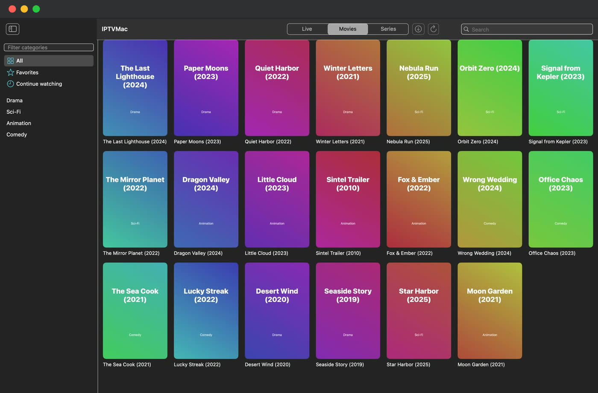

A native IPTV player for Mac.
Xtream Codes and M3U sources, instant search, Picture in Picture, catch-up and downloads. Free and open source, with no account.


Search that keeps up with 100,000 items.
Your library lives in a local SQLite database with full-text search, so results appear as you type. Search inside a category, inside a section or everywhere. Results come back grouped into live channels, movies and series.
- Hebrew, Arabic and Latin text.
- Search runs on your Mac, in a local database.

Every speed from 0.25x to 4x.
Playback runs on mpv. It plays the broken TS and HLS streams that trip up system players and reconnects when a stream drops. Speed works on movies, episodes and catch-up; a live stream cannot run faster than real time.
- Sleep timer from 15 minutes to 2 hours.
- Skip step from 5 to 60 seconds.
- Fit, fill or stretch the picture.

Keep watching while you browse.
Picture in Picture is IPTVMac's own floating window. It stays on top of other apps and follows you across Spaces, including over full screen apps. Pick another channel or movie in the main window and the video keeps playing.
- Works on live channels, movies and episodes.
- Drag it anywhere and resize it.
- Hover for pause, close and a button back to the main window.
Drag the floating window to move it.

Several playlists, one library.
Add as many Xtream Codes and M3U sources as you like and switch between them from the toolbar. Choose All playlists to search, favorite and continue watching across every one, with the playlist name on each item.
- Xtream Codes: server address, username and password.
- M3U: a name and the playlist link.
31 languages, each in its own script.
IPTVMac follows your Mac's language, or you pick one in Settings. Hebrew, Arabic, Persian and Urdu get a layout that mirrors the whole interface.
- עברית
- English
- العربية
- Español
- Français
- Deutsch
- Português
- Italiano
- Русский
- Українська
- Polski
- Română
- Български
- Nederlands
- Svenska
- Čeština
- Magyar
- Ελληνικά
- Shqip
- Türkçe
- فارسی
- اردو
- हिन्दी
- বাংলা
- Bahasa Indonesia
- Tiếng Việt
- ไทย
- 简体中文
- 繁體中文
- 日本語
- 한국어
The same toolbar in three languages, as the app draws it:
Apart from Hebrew, English and Arabic, the translations were written with AI help and no native speaker has reviewed them yet. Corrections are welcome. How to contribute a translation
Install in one line.
Paste it in Terminal. The script downloads the latest release, checks its signature and SHA-256, copies IPTVMac to Applications and opens it. After that the app updates itself.
Needs an Apple Silicon Mac (M1 or later) and macOS 14 or later.
curl -fsSL https://raw.githubusercontent.com/Goelir/IPTVMac/main/install.sh | bash
Looking up the latest release...
Downloading IPTVMac v0.9.0...
Installed: /Applications/IPTVMac.app
Why a command?
IPTVMac is not notarized by Apple, which needs a paid developer account, and macOS blocks apps that a browser marked as downloaded from the internet. A file fetched with curl is not marked, so there is nothing to bypass. The script is short and public: install.sh.
Or download the DMG
- Open IPTVMac.dmg and drag the app onto the Applications icon.
- The first launch is blocked: open System Settings, Privacy & Security, and choose Open Anyway next to IPTVMac.
- Or run
xattr -dr com.apple.quarantine /Applications/IPTVMac.appin Terminal.
No playlist yet?
IPTVMac is only a player, so it needs a playlist. If you do not have a provider, iptv-org is a free, independent open source project that publishes M3U playlists of publicly available channels from around the world. In IPTVMac choose M3U, give it a name and paste the link below.
https://iptv-org.github.io/iptv/index.m3uIPTVMac is not affiliated with iptv-org. Whether a stream is available, and whether you may watch it, depends on the channel and on your country: use only what you are allowed to.
Open iptv-org on GitHubQuestions
What is IPTVMac?
IPTVMac is a free, open source IPTV player for Mac. It plays Xtream Codes and M3U sources with a built-in mpv player, instant search, subtitles, Picture in Picture, catch-up, downloads and an interface in 31 languages.
Does IPTVMac include channels or a subscription?
No. IPTVMac is only a player. It does not include or host any channels, movies or series. You add a source from a provider you are authorized to use. If you have none, the independent open source project iptv-org publishes free playlists of publicly available channels; see the link on this page.
Does it work with Xtream Codes and M3U?
Yes. For Xtream Codes you enter the server address, username and password from your provider. For M3U you enter a name and the playlist link.
Which Macs are supported?
Apple Silicon Macs (M1 or later) with macOS 14 or later. Intel Macs are not supported.
Is IPTVMac free?
Yes. It is free and open source under the GPL-3.0 license, with no ads and no tracking.
Why does macOS block the app, and how do I open it?
IPTVMac is not notarized by Apple, which requires a paid developer account. Install with the one-line command above, which avoids the warning, or open System Settings, Privacy and Security, and choose Open Anyway.
Does IPTVMac have Picture in Picture?
Yes. A floating window stays on top of other apps and across Spaces while you browse for something else.
Can I watch past programs (catch-up)?
Yes, on channels where your provider supports catch-up. Pick a program from the guide.
Is it safe to use?
The source code is public. Updates come from GitHub Releases and are checked against a SHA-256 checksum. Account passwords are stored in the app's local database, readable only by your user.
Guides
Free. Open source.
GPL-3.0. No account, no ads, no tracking.
IPTVMac is a media player. It does not include or host any content; use only sources you are authorized to access. IPTVMac is not affiliated with iptv-org.